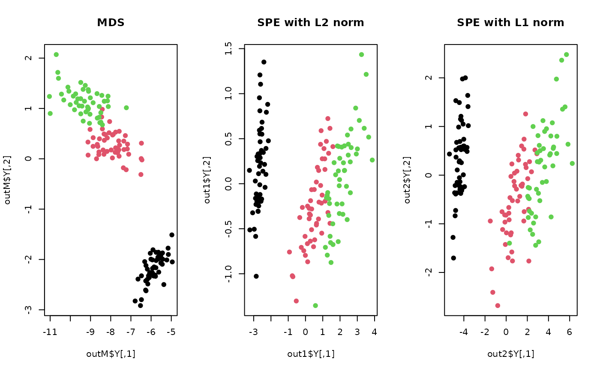

One of drawbacks for Multidimensional Scaling or Sammon mapping is that
they have quadratic computational complexity with respect to the number of data.
Stochastic Proximity Embedding (SPE) adopts stochastic update rule in that
its computational speed is much improved. It performs C number of cycles,
where for each cycle, it randomly selects two data points and updates their
locations correspondingly S times. After each cycle, learning parameter \(\lambda\)
is multiplied by drate, becoming smaller in magnitude.
do.spe(
X,
ndim = 2,
proximity = function(x) {
dist(x, method = "euclidean")
},
C = 50,
S = 50,
lambda = 1,
drate = 0.9
)an \((n\times p)\) matrix or data frame whose rows are observations and columns represent independent variables.
an integer-valued target dimension.
a function for constructing proximity matrix from original data dimension.
the number of cycles to be run; after each cycle, learning parameter
the number of updates for each cycle.
initial learning parameter.
multiplier for lambda at each cycle; should be a positive real number in \((0,1).\)
a named list containing
an \((n\times ndim)\) matrix whose rows are embedded observations.
a list containing information for out-of-sample prediction.
Agrafiotis DK (2003). “Stochastic Proximity Embedding.” Journal of Computational Chemistry, 24(10), 1215--1221.
## load iris data
data(iris)
X = as.matrix(iris[,1:4])
label = as.factor(iris$Species)
## compare with mds using 2 distance metrics
outM <- do.mds(X, ndim=2)
out1 <- do.spe(X, ndim=2)
out2 <- do.spe(X, ndim=2, proximity=function(x){dist(x, method="manhattan")})
## Visualize
opar <- par(no.readonly=TRUE)
par(mfrow=c(1,3))
plot(outM$Y, col=label, main="MDS")
plot(out1$Y, col=label, main="SPE with L2 norm")
plot(out2$Y, col=label, main="SPE with L1 norm")

par(opar)